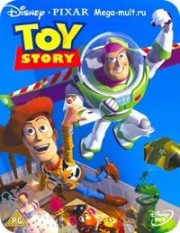

)).jpg) |
Мультфильм повествует об эмоджи по имени Джин, который отправляется в путешествие по телефону подростка Алекса вместе со своими друзьями — Дай Пять и Джейлбрейк. |
Люди окончательно замусорили планету и покинули её в поисках нового дома. Остались только роботы-сортировщики, которые чистят Землю. ВАЛЛ-И — один из них. Но он не просто убирает мусор, а оставляет себе самые интересные вещи, смотрит кино и учится чувствовать. |
|  | Дети часто представляют, что их игрушки на самом деле живые. Мультик рассказывает о жизни этих самых игрушек, об их соперничестве, привязанности к детям, собственном быте и страхах. На день рождения мальчику Энди дарят много подарков, и для старых игрушек — это очень волнительный день. Появление новой игрушки может сулить старой забвение, после чего их отправят на гаражную распродажу или (ещё хуже) свалку. |
Это первый мультфильм, который почти десять лет назад открывал Каннский кинофестиваль. Главный герой — старичок Карл Фредриксен. Он с самого детства был поклонником Чарльза Манца — исследователя Райского водопада. Тогда же, в детстве, он познакомился с соседской девочкой по имени Элли, на которой потом женился. Всю жизнь девушка хотела попасть к Райскому водопаду. Ближе к старости Карл решил наконец исполнить её мечту, но незадолго до поездки она умерла. Чтобы избежать сноса дома, наполненного памятью о жене, он поднимает его в воздух на воздушных шариках и летит в сторону того самого водопада. |
 |
Мультфильм о подростках и переходном возрасте. В нашей голове есть набор из пяти эмоций (Радость, Грусть, Страх, Гнев и Омерзение), которые поддерживают нас в жизни и управляют всеми действиями, договариваясь между собой. Но в подростковом возрасте, особенно если ты переезжаешь в новый город и идёшь в новую школу, всё резко меняется. И эмоции выходят из-под контроля. |
Эльза, юная принцесса королевства Эренделл, с рождения обладает магической способностью создавать лёд и снег, а также управлять ими. Она пользуется своей магией, когда играет с младшей сестрёнкой Анной. Во время одной из игр во дворце, поскользнувшись, Эльза случайно попадает своей магией в голову сестры, из-за чего та начинает замерзать. Король и королева, воспользовавшись древней картой, обращаются за помощью к троллям. Их предводитель Пабби исцеляет Анну (остаётся лишь белая прядь волос) и стирает у неё все воспоминания о магических способностях сестры. Он предостерегает Эльзу о том, что если она не научится контролировать свои силы и уступит страху, то это приведёт к беде. Стремясь защитить Эльзу и других людей от её силы, королевская семья запирает себя в замке. |
Очередной шедевр Хаяо Миядзаки по мотивам сказочного романа английского писателя Дианы Уинн Джонс. По словам Миядзаки, прообраз замка Хаула — русская избушка на курьих ножках. Действие происходит в параллельном мире Европы конца XIX века, где магия идёт рука об руку с развитием технологий. Жизнь шляпницы Софи меняется, когда в окрестностях города появляется ходячий замок волшебника Хаула. Он спасает девушку от приставаний, и она влюбляется в него. Но прогулка с Хаулом лишает Софи красоты и молодости. |
Зверополис — город, населённый животными, которые живут людской жизнью. У них есть работы, семьи, идеалы. Есть в городе место расизму и стереотипам. Например, крольчиха Джуди Хопс с детства мечтает стать полицейским, где трусливым ушастым обычно не место. Но всё меняется.. |